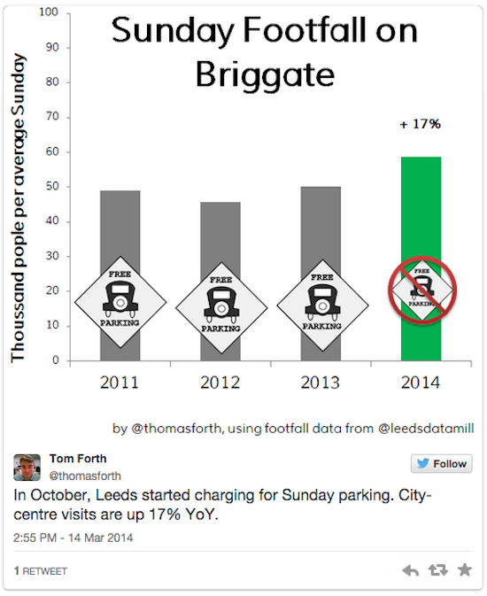

Open data for cities: Leeds shows us how it's done
On a typical morning a city high street buzzes with activity. A school bus full of children stops at a traffic light to let suited commuters cross the street on their way to work. A Post Office opens its doors to a queue of people waiting to send parcels or pay bills. Grocery shops pile fruit on stalls outside their doors, while a barmaid pours water outside a nearby pub and offers a leftover sandwich to a homeless man.
All this activity is being documented more and more by councils, businesses and charities to measure and understand more about the work they do. If they make this data openly available for each other to use, services can be improved, businesses can be more strategic and we can all understand more about how our cities function. In other words, we can get a better sense of the ‘heartbeat of the city’, as open data expert Mark Barrett explained in his Friday lunchtime lecture last week.
Mark has spent the last year promoting open data ‘for the city, by the city’. He started out in 2013 by co-founding Leeds Data Thing, a group set up to explore the benefits of open data across industries in Leeds.
People gathered from all sorts of backgrounds, and chatted over beers and came to a conclusion: they needed a platform where all the city’s data could sit. Mark approached Leeds council, who were receptive to the idea of opening their data, and encouraged by the suggested approach of also attempting to release data from the private and nonprofit sectors to tell the story of the whole city.
This inspired a eureka moment: Mark and his group could set an open data platform up for the city themselves.
With the support of Leeds City Council, and the Open Data User Group, Mark worked to develop a platform that used open source technologies (CKAN) but added a layer of design and development enhancements to customise it for a Leeds audience. And with that, Leeds Data Mill was born.
The aim was simple:
“To kick-start a new generation of data-empowered citizens and businesses who will share and explore information to bring value and benefit to everyone within the city.”
With new projects and debates emerging from Leeds Data Mill all the time, it’s fair to say that aim is being met. The platform is promoting open data in three ways: by raising awareness of data in the city, encouraging re-use of city data by residents and supporting other cities to launch similar platforms.
First, through free, public events like Health in Numbers Leeds Data Mill encourages people in the city to understand how open data can affect their lives, work and services.
Second, as more residents hear about open data and the platform itself through this kind of outreach, they are beginning to access and use the data themselves in different ways. For example, when the Leeds Guardian took a poll on parking charges and their impact on city centre trade and footfall, residents took to Leeds Data Mill to study, analyse and present the data to back up their claims.

Data projects inspired and facilitated by Leeds Data Mill have also taken more artistic forms to encourage civic participation and raise city’s cultural profile. One project turned data about pedestrian traffic into pieces of music for a brass band, which would play them in public spaces and reflect how busy the streets were in their rhythm, pitch and volume.
Another project crowdsourced data about artwork in Leeds. Game developers Wetgenes encouraged art lovers to upload pictures of art they had seen in the city using the hashtag #leedsartcrawl, so it was easy to find out where they all are and the condition they are in.
Third, in order to inspire and support other cities to create open data platforms, Mark holds what he calls ‘counselling group’ chats with people from other cities to exchange war stories and share tricks of the trade.
This feels like the start of something big. Leeds Data Mill has set a precedent for open city platforms with input and support from across all sectors within them. And with cities realising the value of local open data more and more, we’re looking forward to seeing who’s next, and how Marks new joint venture, Hebe Works pushes forward with open data.
To keep on top of events, research and stories about open data in Leeds, follow @LeedsDataMill and [@mbarrett](https://twitter.com/mbarrett/ on Twitter "@mbarrett")._